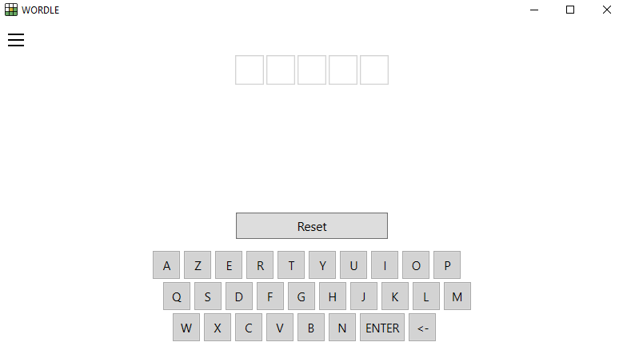
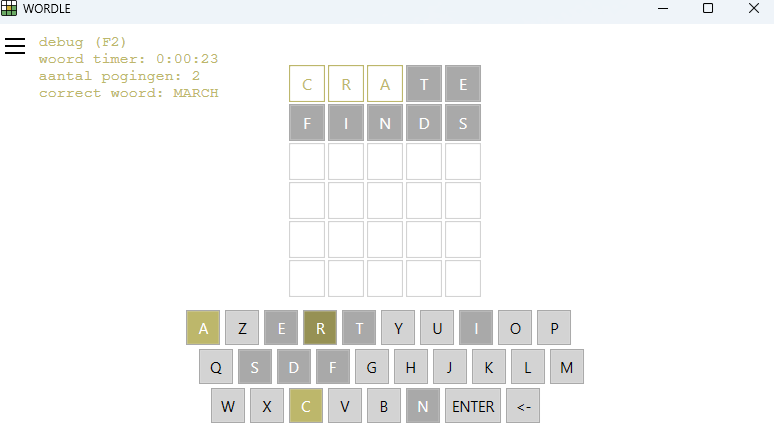
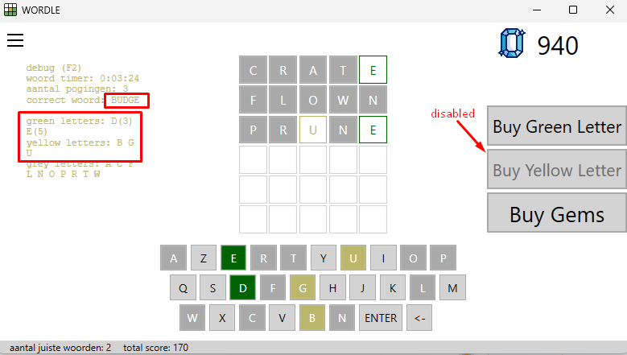
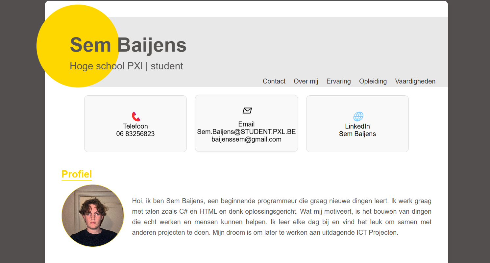
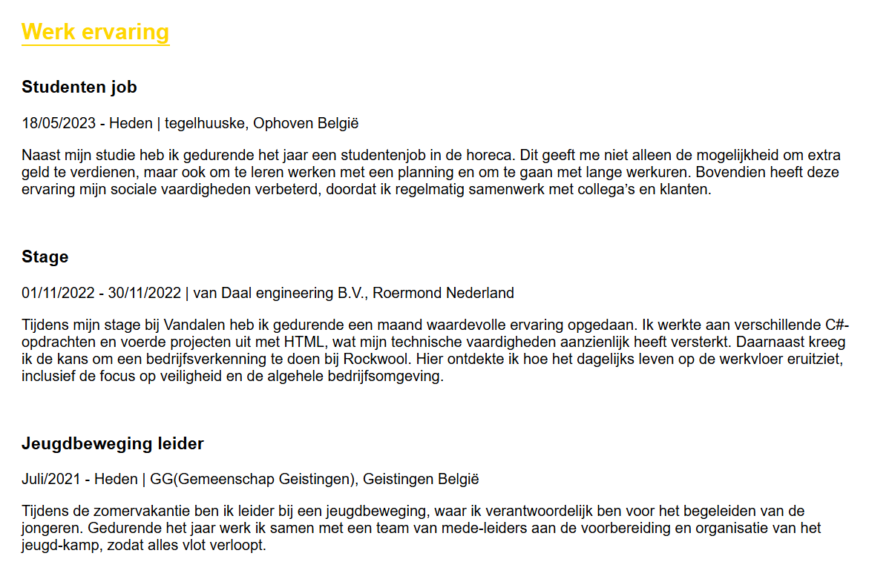
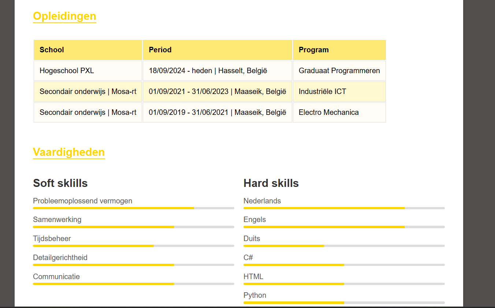

Wordle 1
Eerste kennismaking met programmeerlogica, loops, arrays en validatie.
- Arrays en loops
- Inputvalidatie
- Debugging
Portfolio · Werkplekleren
Tijdens Werkplekleren 1 legde ik de basis voor mijn ontwikkeling als programmeur. Ik werkte aan programmeerlogica, webontwikkeling, Wordle-projecten en een professioneel digitaal curriculum vitae.

Eerste kennismaking met programmeerlogica, loops, arrays en validatie.

Uitbreiding met GUI, structuur en gebruiksvriendelijkheid.

Verdere uitbreiding met multiplayerfunctionaliteit en scoreborden.



Webproject
Een professionele en responsieve CV-website gebouwd met HTML, CSS en JavaScript.
Tijdens deze sessie leerde ik hoe belangrijk personal branding is binnen een professionele omgeving.
Het gaat niet alleen om technische vaardigheden, maar ook om communicatie, presentatie en uitstraling.
Ik kan deze inzichten toepassen door professioneel te communiceren, mijn online profiel te verbeteren en actief aan mijn soft skills te werken.
Mijn passie ligt bij ontdekken, innoveren en mezelf voortdurend verbeteren.
Ik wil groeien in empathisch luisteren en beter samenwerken met anderen.
Ik neem graag initiatief en wil sneller leren handelen en omgaan met uitdagingen.
Creativiteit en innovatie helpen mij groeien als toekomstige professional.
Mijn netwerk bestaat uit vrienden, familie, collega’s en professionals die mij ondersteunen met feedback en advies.
Ik wil groeien in communicatie, samenwerken en openstaan voor verschillende ideeën.
Samenwerking tussen verschillende disciplines is essentieel voor innovatie.
Door praktijkervaring, stages en samenwerking met anderen ontwikkel ik zowel hard skills als soft skills.